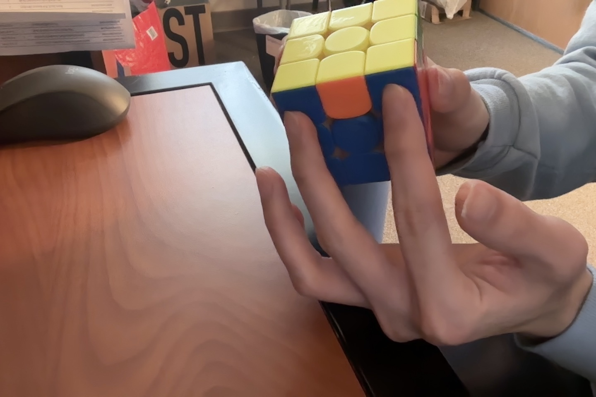

The first substep is to complete the corners or make all four sides have “headlights”. In order to do so, you have to first find “headlights” of the cube that looks something like this:
It does not matter which color is in the middle or which color the headlight is, it just has to form a headlight, with the colors of two corners facing towards you having the same color.
Depending on the number of headlights, you can end up in different cases:
Congratulations. Now you have solved your first cube! While there seems to be a lot of algorithms to memorize, with enough practice you will be able to memorize them all. In fact, since this algorithm is based on the CFOP method, if you have mastered the concepts here you will be able to naturally progress towards the full CFOP method. If you are interested in further learning, refer to the following article to learn more about the full CFOP method: Click here to learn more about advanced CFOP method